Explore textbooks and handbooks dedicated to INLA and its applications
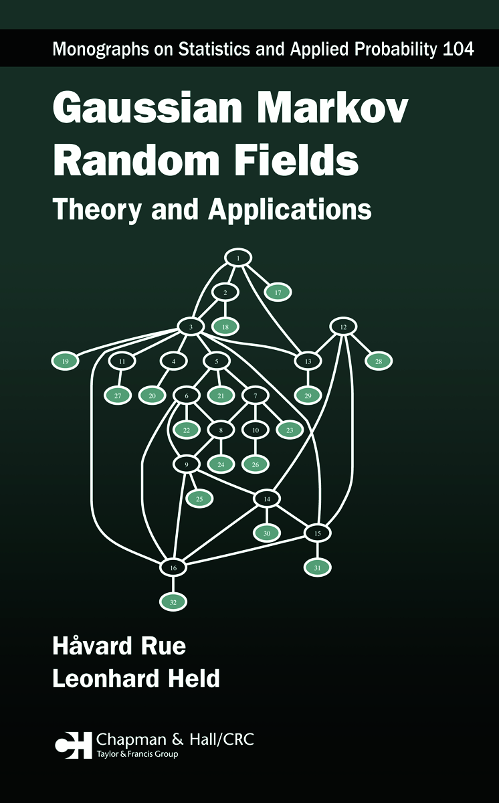
Gaussian Markov Random Field (GMRF) models are widely used in spatial statistics, a very active area of research with few up-to-date references.
This is the first book that provides a unified framework for GMRFs with an emphasis on computational aspects.
It includes extensive case studies and a C-library for fast and exact simulation. With chapters by leading researchers, this volume is essential
reading for statisticians and scientists working with spatial data across a range of disciplines.
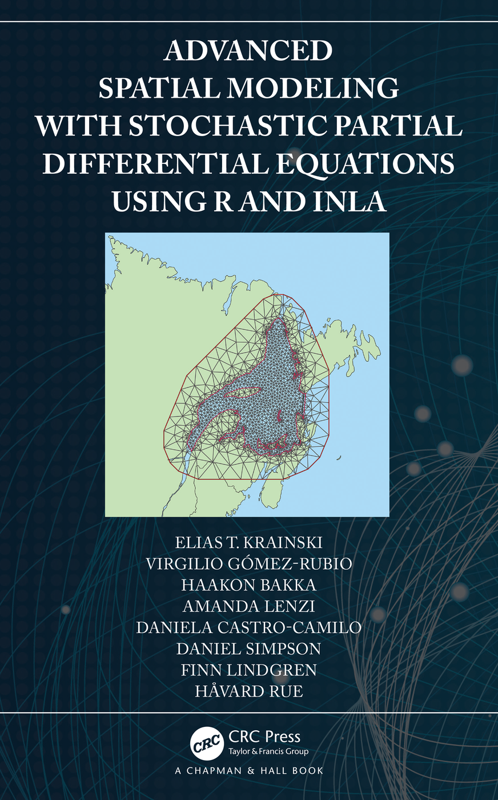
Modeling spatial and spatio-temporal continuous processes is an important and challenging problem in spatial statistics. Advanced Spatial Modeling with Stochastic Partial Differential Equations Using R and INLA describes the SPDE approach for modeling continuous spatial processes with a Matérn covariance, implemented using INLA in the R-INLA package. Examples include simulated data and real-world applications.
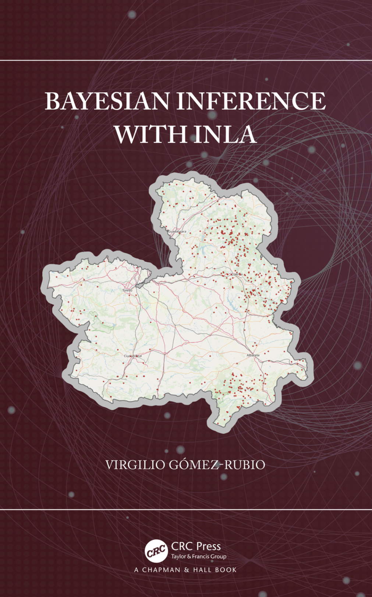
Bayesian Inference with INLA provides a comprehensive introduction to the INLA method and its R implementation for model fitting.
It covers both the underlying methodology and practical usage to fit a wide range of models using R.
Topics include generalized linear mixed-effects models, multilevel models, spatial and spatio-temporal models, smoothing methods, survival analysis,
imputation of missing values, and mixture models. The book also discusses advanced features and how to extend the package with custom priors and latent models.
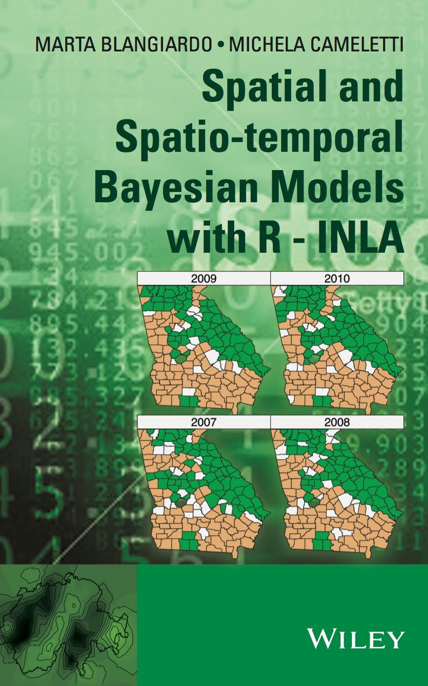
Spatial and Spatio-Temporal Bayesian Models with R-INLA offers a practically oriented and innovative presentation of Bayesian methodology applied to spatial statistics.
It introduces Bayesian theory with a focus on spatial and spatio-temporal models and includes practical examples from epidemiology, biostatistics, and social sciences — all implemented in the R-INLA package.
The book provides a valuable alternative to traditional MCMC simulations with reproducible code and real data applications.
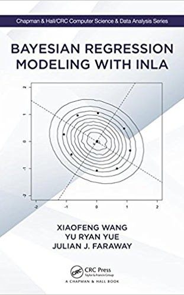
Bayesian Regression Modeling with INLA explores a wide range of modern regression models using real-world data and the INLA approach.
It emphasizes the interplay of theory and practice with reproducible examples and complete R commands. A companion website hosts all the datasets and R code used in the book,
along with an R package for additional functionality.
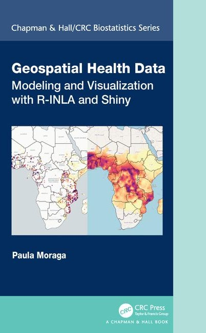
Geospatial Health Data introduces spatial and spatio-temporal statistical methods for analyzing and visualizing health data using R-INLA and Shiny.
The book covers data manipulation, Bayesian hierarchical modeling, spatial modeling with SPDE and INLA, and interactive data visualization using R and Shiny.
It features fully reproducible real-world case studies and provides clear R code to support students, researchers, and practitioners working with georeferenced data.
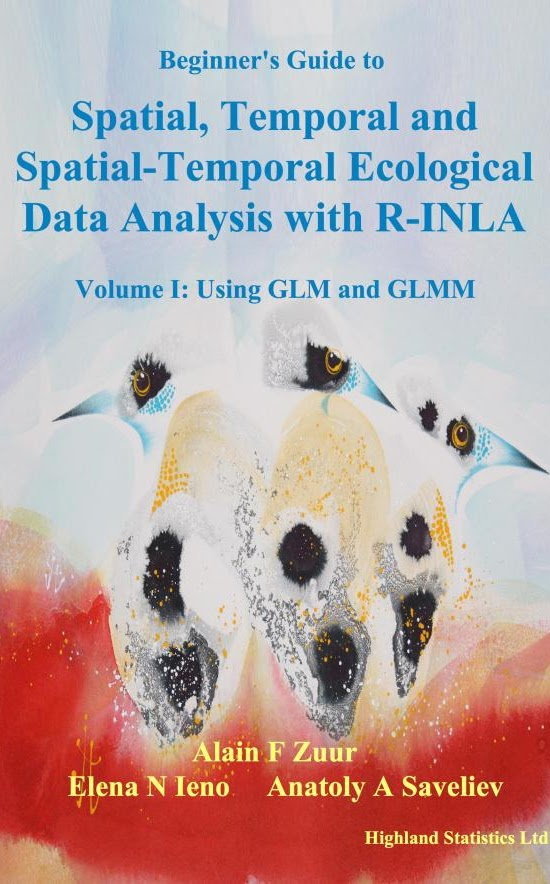
Volume I introduces linear models, GLMs, and GLMMs for analyzing spatial, temporal, and spatial-temporal ecological data using R-INLA. Models cover Gaussian and gamma distributions (continuous data), Poisson and negative binomial (count data), and Bernoulli and binomial (binary/proportional data).
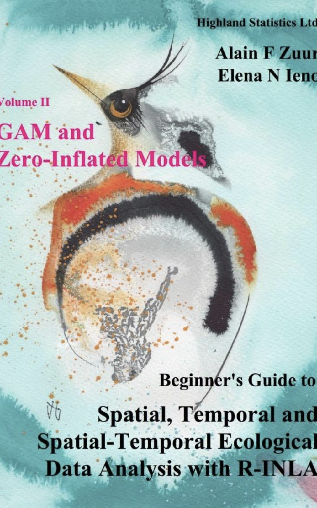
Volume II extends the methods from Volume I with zero-inflated and generalized additive (mixed-effects) models for spatial and spatial-temporal data.
The book includes fully reproducible R code, datasets, and detailed guidance for ecological applications using the INLA framework.
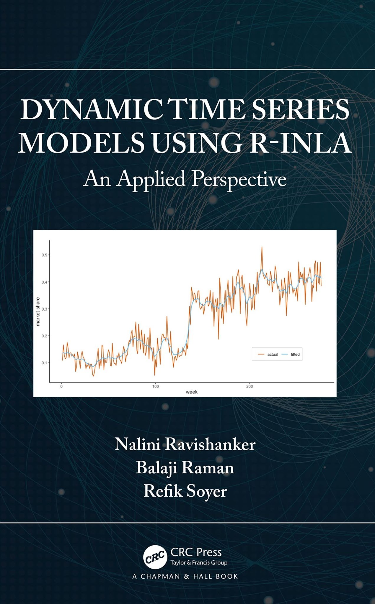
Dynamic Time Series Models using R-INLA: An Applied Perspective is the outcome of a joint effort to systematically describe the use of R-INLA
for analysing time series data, with accompanying code and practical examples.
This book introduces the theoretical underpinnings of R-INLA along with the tools needed for modelling various types of time series
using an approximate Bayesian framework.
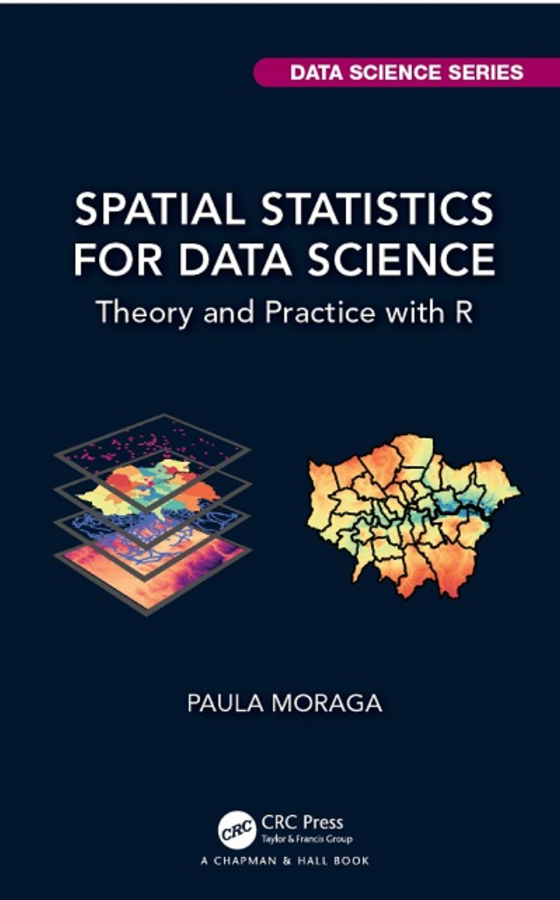
Spatial Statistics for Data Science offers a practical and theoretical guide to analyzing spatial data using R. It covers spatial data types, modeling techniques, and visualization methods with reproducible real-world examples.
The book includes applications in public health, environment, ecology, and urban studies, and demonstrates how to use INLA and SPDE for Bayesian spatial modeling.
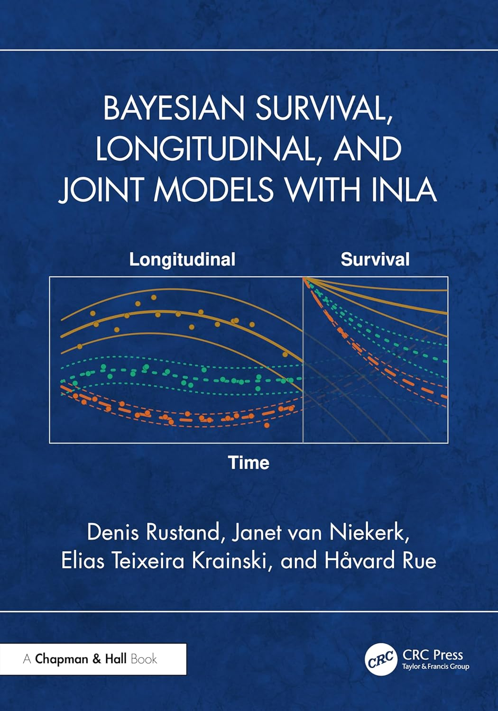
Bayesian Survival, Longitudinal, and Joint Models with INLA covers Bayesian inference for time to event and repeated measurement data, and for joint models that link the two, all fitted with INLA.
The methods are illustrated with reproducible examples using the INLAjoint package, which builds on R-INLA to specify and fit multivariate longitudinal and survival submodels together.